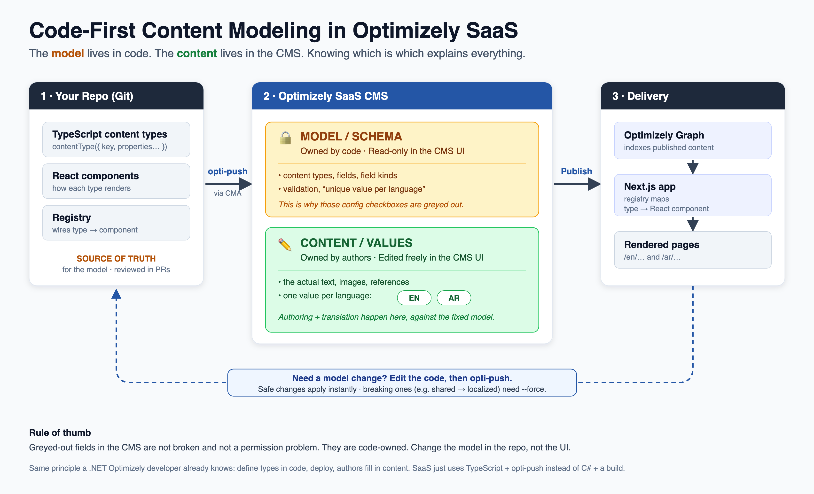

This one comes straight from a real moment on our project. An author opened Site Settings, switched the language to Arabic, tried to edit a navigation label, and the field would not budge. Then they opened the content type to change a setting, and half the options were greyed out with the Save button disabled. The natural reaction was, "It is a SaaS CMS, why can it not just let me edit this?"
The answer is not a bug and not a permissions issue. It is the single most important concept to understand about how we build on Optimizely SaaS: we model content code-first. Once the team understands what that means, every greyed-out field, every push step, and every "why is it like this" question answers itself. This guide is the explanation I wish everyone had on day one.
Every CMS has two different things inside it, and people constantly confuse them:
| Layer | What it is | Who owns it | Edited where |
|---|---|---|---|
| Model (schema) | Content types, their fields, field kinds, validation, and whether a field is per-language | Code (our repo) | In the repo, then pushed |
| Content (values) | The actual text, images, references, and translations authors type | Authors | In the CMS UI, freely |
Code-first only touches the first layer. It means we define the shape of content in version-controlled code and sync that shape to the CMS. It does not lock authoring. Authors still create, edit, translate, and publish content in the SaaS UI exactly as they expect. The only thing that is fixed in the UI is the shape.
So when a field is greyed out, read it as a label: "this belongs to the model, so change it in the repo, not here."
When a content type is managed by code, Optimizely deliberately locks its structure in the admin UI. Look closely at that Properties screen: the display name and help text stay editable (they are cosmetic), but the field type, the "List" flag, "value must be entered", "unique value per language", and indexing are all disabled, and Save is off.
That split is intentional. If the CMS let you change the structure in one place while the code said something different, the two would drift apart, and the next sync would silently overwrite your UI change. Rather than let that happen, Optimizely makes the structure read-only wherever code owns it. The platform is protecting you from a conflict you cannot win, because the code always gets the final say.
You can edit directly, for content. That is most of what happens in the CMS every day. What you cannot do in the UI is redefine the model, and that is a choice we made, not a limitation of SaaS. Optimizely supports two styles:
For a real project with more than one environment and more than one person, code-first wins on repeatability and governance. The cost is that model edits go through a small workflow instead of a click. That trade is the whole point.
If your background is Optimizely or Sitecore on .NET, you already do this. A PaaS developer writes C# classes decorated with content type attributes, deploys the app, and the CMS syncs the model on startup. The model lives in code, and authors fill in the content afterward.
SaaS is the same idea with a different toolchain. Instead of C# classes we write TypeScript definitions, and instead of a build-and-deploy we run a push command that calls Optimizely's management API. The mental model is identical: developers own the model in source control, and the CMS is the runtime where authors work and where the delivery layer serves content. Nobody has to relearn the concept, only the syntax and the sync command.
Here is the loop we run, and the one you would hand to a new team member.

This is the part teams learn the hard way, so here it is up front. When you push a model change, Optimizely sorts it into one of two buckets.
We hit a textbook example. To let authors translate the navigation, we needed a field to switch from "shared across all languages" to "one value per language". The push accepted the change but stopped with a warning that flipping shared to per-language is breaking and could result in data loss, and asked for the force flag. That is correct behaviour: an existing single value has to be migrated into a specific language, and the platform will not gamble with your content silently. The lesson for the team is simple. Before forcing a breaking change, back up the current values, then force it, then verify nothing was lost.
Once the team internalises the two-layer split, the CMS stops feeling restrictive and starts feeling predictable. You always know where a change belongs, and you always know why a field behaves the way it does.